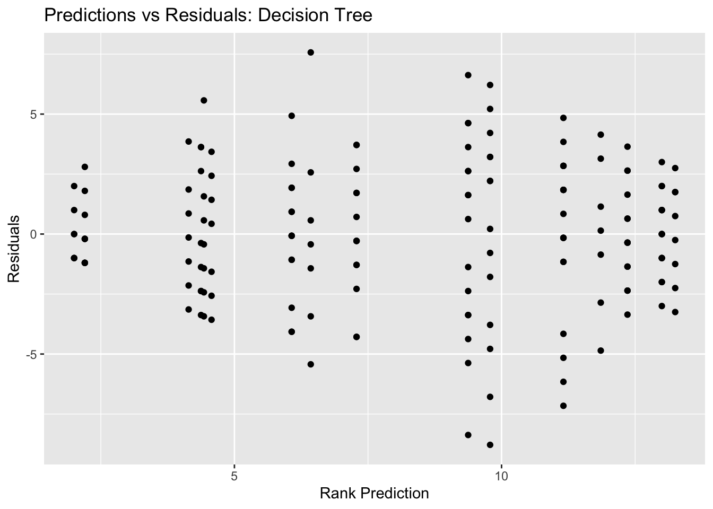

Tidy Tuesday Exercise 2
Analyzing Marble Runs!
Load packages and data
# Load packages
library(tidyverse)
library(knitr)
library(here)
library(dplyr)
library(scales)
library(ggthemes)
library(ggplot2)
library(tidymodels)
library(vip)
library(parsnip)
library(recipes)
library(magrittr)##
## Attaching package: 'magrittr'## The following object is masked from 'package:rlang':
##
## set_names## The following object is masked from 'package:tidyr':
##
## extract## The following object is masked from 'package:purrr':
##
## set_names# Get the Data
marbles <- readr::read_csv('https://raw.githubusercontent.com/rfordatascience/tidytuesday/master/data/2020/2020-06-02/marbles.csv')## Rows: 256 Columns: 14## ── Column specification ────────────────────────────────────────────────────────
## Delimiter: ","
## chr (9): date, race, site, source, marble_name, team_name, pole, host, notes
## dbl (5): time_s, points, track_length_m, number_laps, avg_time_lap##
## ℹ Use `spec()` to retrieve the full column specification for this data.
## ℹ Specify the column types or set `show_col_types = FALSE` to quiet this message.# Take a look at data
glimpse(marbles)## Rows: 256
## Columns: 14
## $ date <chr> "15-Feb-20", "15-Feb-20", "15-Feb-20", "15-Feb-20", "15…
## $ race <chr> "S1Q1", "S1Q1", "S1Q1", "S1Q1", "S1Q1", "S1Q1", "S1Q1",…
## $ site <chr> "Savage Speedway", "Savage Speedway", "Savage Speedway"…
## $ source <chr> "https://youtu.be/JtsQ_UydjEI?t=356", "https://youtu.be…
## $ marble_name <chr> "Clementin", "Starry", "Momo", "Yellow", "Snowy", "Razz…
## $ team_name <chr> "O'rangers", "Team Galactic", "Team Momo", "Mellow Yell…
## $ time_s <dbl> 28.11, 28.37, 28.40, 28.70, 28.71, 28.72, 28.96, 29.11,…
## $ pole <chr> "P1", "P2", "P3", "P4", "P5", "P6", "P7", "P8", "P9", "…
## $ points <dbl> NA, NA, NA, NA, NA, NA, NA, NA, NA, NA, NA, NA, NA, NA,…
## $ track_length_m <dbl> 12.81, 12.81, 12.81, 12.81, 12.81, 12.81, 12.81, 12.81,…
## $ number_laps <dbl> 1, 1, 1, 1, 1, 1, 1, 1, 1, 1, 1, 1, 1, 1, 1, 1, 10, 10,…
## $ avg_time_lap <dbl> 28.11, 28.37, 28.40, 28.70, 28.71, 28.72, 28.96, 29.11,…
## $ host <chr> "No", "No", "No", "No", "No", "No", "No", "No", "No", "…
## $ notes <chr> NA, NA, NA, NA, NA, NA, NA, NA, NA, NA, NA, NA, NA, NA,…Here, we see that most of the variables seem appropriately classified as either a character or double. However, the date variable is saved as a character. We might want to convert this to the class date if we look at scores over time, etc.
There are also some variables that we can probably go ahead and elimiate from our clean dataset, which won’t be informative for our analysis. These include the source and notes column.
We’ll also want to look at missing variables. It looks like there could be some missing variables in the points column. Does that mean no points were acquired, or is the data truly missing? Should we remove the column, remove the missing observations, or assume that NA points = 0 points?
Checking out missing values
is.na(marbles) %>% summary()## date race site source
## Mode :logical Mode :logical Mode :logical Mode :logical
## FALSE:256 FALSE:256 FALSE:256 FALSE:256
##
## marble_name team_name time_s pole
## Mode :logical Mode :logical Mode :logical Mode :logical
## FALSE:256 FALSE:256 FALSE:253 FALSE:128
## TRUE :3 TRUE :128
## points track_length_m number_laps avg_time_lap
## Mode :logical Mode :logical Mode :logical Mode :logical
## FALSE:128 FALSE:256 FALSE:256 FALSE:253
## TRUE :128 TRUE :3
## host notes
## Mode :logical Mode :logical
## FALSE:256 FALSE:7
## TRUE :249There are some missing values in time and average lap time. It may be appropriate to remove these observations. There are substantial missing values for the pole and points variables. If we removed all of these observations, we would decrease our data set size by half. Plus, it looks like observations that have data for pole, are missing data for points, and vice versa.
However, these variables might be useful for analysis, so we might not want to get rid of them completely.
I’m not entirely sure how to interpret either the pole or the point information. I think that we can get the information that we need from the time_s and avg_time_lap columns to compare the marbles performance, though. So, we’ll remove pole and point columns.
Cleaning the data
# Remove pole, point, source, and notes columns
clean <- marbles %>% select(-"pole",
-"points",
-"source",
-"notes")
glimpse(clean)## Rows: 256
## Columns: 10
## $ date <chr> "15-Feb-20", "15-Feb-20", "15-Feb-20", "15-Feb-20", "15…
## $ race <chr> "S1Q1", "S1Q1", "S1Q1", "S1Q1", "S1Q1", "S1Q1", "S1Q1",…
## $ site <chr> "Savage Speedway", "Savage Speedway", "Savage Speedway"…
## $ marble_name <chr> "Clementin", "Starry", "Momo", "Yellow", "Snowy", "Razz…
## $ team_name <chr> "O'rangers", "Team Galactic", "Team Momo", "Mellow Yell…
## $ time_s <dbl> 28.11, 28.37, 28.40, 28.70, 28.71, 28.72, 28.96, 29.11,…
## $ track_length_m <dbl> 12.81, 12.81, 12.81, 12.81, 12.81, 12.81, 12.81, 12.81,…
## $ number_laps <dbl> 1, 1, 1, 1, 1, 1, 1, 1, 1, 1, 1, 1, 1, 1, 1, 1, 10, 10,…
## $ avg_time_lap <dbl> 28.11, 28.37, 28.40, 28.70, 28.71, 28.72, 28.96, 29.11,…
## $ host <chr> "No", "No", "No", "No", "No", "No", "No", "No", "No", "…is.na(clean) %>% summary()## date race site marble_name
## Mode :logical Mode :logical Mode :logical Mode :logical
## FALSE:256 FALSE:256 FALSE:256 FALSE:256
##
## team_name time_s track_length_m number_laps
## Mode :logical Mode :logical Mode :logical Mode :logical
## FALSE:256 FALSE:253 FALSE:256 FALSE:256
## TRUE :3
## avg_time_lap host
## Mode :logical Mode :logical
## FALSE:253 FALSE:256
## TRUE :3# Remove 3 observations with missing values for avg_lap_time and time_s
clean <- clean %>% na.omit()
clean$date <- lubridate::dmy(clean$date) #indate day month year format of input
clean <- clean %>% mutate(date = lubridate::as_date(date)) #convert chr to date class
class(clean$date) #double check class conversion worked## [1] "Date"Explore the data
summary(clean)## date race site marble_name
## Min. :2020-02-15 Length:253 Length:253 Length:253
## 1st Qu.:2020-02-29 Class :character Class :character Class :character
## Median :2020-03-14 Mode :character Mode :character Mode :character
## Mean :2020-03-11
## 3rd Qu.:2020-03-28
## Max. :2020-04-05
## team_name time_s track_length_m number_laps
## Length:253 Min. : 17.76 Min. :11.90 Min. : 1.00
## Class :character 1st Qu.: 28.40 1st Qu.:12.81 1st Qu.: 1.00
## Mode :character Median : 36.28 Median :12.84 Median : 1.00
## Mean :190.84 Mean :13.22 Mean : 6.19
## 3rd Qu.:338.16 3rd Qu.:14.38 3rd Qu.:10.00
## Max. :492.01 Max. :14.55 Max. :16.00
## avg_time_lap host
## Min. :17.76 Length:253
## 1st Qu.:25.94 Class :character
## Median :30.05 Mode :character
## Mean :29.70
## 3rd Qu.:33.65
## Max. :41.62This summary tells us that we have records for marble performance throughout differences races (different dates). The races can occur at different sites, and each marble is also associated with a particular team. We know whether or not the marble was part of the hosting team, and we also have the average lap time for each marbles in a given race, as well as the total time a marble took to complete a race and the number of laps in a race.
We may need to do some pre-processing to determine some stats that allow us to compare model performance, since not all race lengths are the same. We might want to group by race and determine a marble’s rank/place at finish by comparing the times, and we may also want to calculate the average race time for all marbles in a given race to understand whether a marble performs above or below average.
We also have average time per lap which could be a good comparison. But, lap lengths may differ based on site. We have the track lengths available, so we can calculate marble speed using average time per lap and track length in order to make these values comparable.
Feature engineering/variable creation
# calculate speed in m/s
clean <- clean %>% mutate(avg_speed = track_length_m/avg_time_lap)
# calculate race rank
clean <- clean %>% group_by(race) %>% mutate(rank =
rank(time_s,
ties.method = "first")) # for simplicity we will assign ties to rank the first duplicate first
# calculate total distance in meters of the race
clean <- clean %>% mutate(dist = track_length_m*number_laps)Research questions
Now that we have some more informative variables to work with, let’s think about our key research questions.
- Do some marbles inherently perform better than others? Do certain teams perform better than others?
- How does speed change in longer races - increase or decrease?
- Does the hosting team have an advantage - do “host” marbles more often win races than “visitor” marbles?
These questions boil down to this: outcome of interest: rank, speed predictors: dist, host
EDA
Visualize with some figures
Average performance of individual marbles
ggplot(clean, aes(marble_name, rank)) + geom_boxplot() +
theme(axis.text.x = element_text(angle = 45, hjust=1))### Average performance of teams
ggplot(clean, aes(team_name, rank)) + geom_boxplot() +
theme(axis.text.x = element_text(angle = 45, hjust=1))### Total distance of race and average lap time
ggplot(clean, aes(dist, avg_time_lap)) + geom_point()### Host status and race performance
ggplot(clean, aes(host, rank)) + geom_boxplot()ggplot(clean, aes(date, rank , color = team_name)) + geom_line() +
theme(axis.text.x = element_text(angle = 45, hjust=1))My original thought was that this plot would let us see the average performance of each team over time, and visualize any patterns. However, this is too busy to be useful/informative.
How does an marble team’s performance change over time?
clean %>% filter(team_name == "Hornets") %>% ggplot(aes(date, rank)) + geom_line() +
theme(axis.text.x = element_text(angle = 45, hjust=1))Does site location impact marble speed? Do different sites have different “difficulty” of track?
ggplot(clean, aes(site, avg_speed)) + geom_col() +
theme(axis.text.x = element_text(angle = 45, hjust=1))Modeling
Split into test and train
# set seed for reproducible analysis (instead of random subset each time)
set.seed(123)
#subset 3/4 of data as training set
data_split <- initial_split(clean,
prop = 7/10,
strata = "rank") #stratify by outcome of interest for balanced split
#save sets as data frames
train_data <- training(data_split)
test_data <- testing(data_split)Set up cross validation
#create folds (resample object)
set.seed(123)
folds <- vfold_cv(train_data,
v = 5,
repeats = 5,
strata = "rank") #folds is set up to perform our CVLinear model
#linear model set up
lm_mod <- linear_reg() %>%
set_engine('lm') %>%
set_mode('regression')
#create recipe for data and fitting and make dummy variables
rank_rec <- recipe(rank ~ ., data = train_data) %>%
step_dummy(all_nominal(),
-all_outcomes()) %>% step_zv(all_predictors()) %>% step_unknown()
#create recipe for Lasso and elastic net that exclude character variables
train_data_2 <- train_data %>% select(-"date",
-"race",
-"site",
-"marble_name",
-"team_name",
-"host"
)## Adding missing grouping variables: `race`rank_rec_2 <- recipe(rank ~ ., data = train_data_2) %>%
step_dummy(all_nominal(),
-all_outcomes()) %>% step_zv(all_predictors()) %>% step_unknown()
#workflow set up
rank_wflow <-
workflow() %>% add_model(lm_mod) %>% add_recipe(rank_rec)
#use workflow to prepare recipe and train model with predictors
rank_fit <-
rank_wflow %>% fit(data = train_data)
#extract model coefficient
rank_fit %>% extract_fit_parsnip() %>% tidy()## # A tibble: 77 × 5
## term estimate std.error statistic p.value
## <chr> <dbl> <dbl> <dbl> <dbl>
## 1 (Intercept) -142293. 7190. -19.8 4.84e-40
## 2 date 7.72 0.390 19.8 4.43e-40
## 3 time_s 0.902 0.0607 14.9 3.07e-29
## 4 track_length_m 82.7 6.78 12.2 6.34e-23
## 5 number_laps 168. 9.77 17.1 2.18e-34
## 6 avg_time_lap 0.740 0.662 1.12 2.66e- 1
## 7 avg_speed -123. 36.0 -3.41 8.82e- 4
## 8 dist -17.2 0.983 -17.5 3.99e-35
## 9 race_S1Q2 -140. 8.40 -16.7 2.29e-33
## 10 race_S1Q3 -32.9 4.07 -8.10 4.56e-13
## # … with 67 more rowsNull model performance
#recipe for null model
null_train_rec <- recipe(rank ~ 1, data = train_data) #predicts mean of outcome
#null model workflow incorporating null model recipe
null_wflow <- workflow() %>% add_model(lm_mod) %>% add_recipe(null_train_rec)
# I want to check and make sure that the null model worked as it was supposed to, so I want to view the predictions and make sure they are all the mean of the outcome
#get fit for train data using null workflow
nullfittest <- null_wflow %>% fit(data = train_data)
#get predictions based on null model
prediction <- predict(nullfittest, train_data)
test_pred <- predict(nullfittest, test_data)
#the predictions for the train and test data are all the same mean value, so this tells us the null model was set up properly
#Now, we'll use fit_resamples based on the tidymodels tutorial for CV/resampling (https://www.tidymodels.org/start/resampling/)
#fit model with training data
null_fit_train <- fit_resamples(null_wflow, resamples = folds)## ! Fold1, Repeat1: internal: A correlation computation is required, but `estimate` is const...## ! Fold2, Repeat1: internal: A correlation computation is required, but `estimate` is const...## ! Fold3, Repeat1: internal: A correlation computation is required, but `estimate` is const...## ! Fold4, Repeat1: internal: A correlation computation is required, but `estimate` is const...## ! Fold5, Repeat1: internal: A correlation computation is required, but `estimate` is const...## ! Fold1, Repeat2: internal: A correlation computation is required, but `estimate` is const...## ! Fold2, Repeat2: internal: A correlation computation is required, but `estimate` is const...## ! Fold3, Repeat2: internal: A correlation computation is required, but `estimate` is const...## ! Fold4, Repeat2: internal: A correlation computation is required, but `estimate` is const...## ! Fold5, Repeat2: internal: A correlation computation is required, but `estimate` is const...## ! Fold1, Repeat3: internal: A correlation computation is required, but `estimate` is const...## ! Fold2, Repeat3: internal: A correlation computation is required, but `estimate` is const...## ! Fold3, Repeat3: internal: A correlation computation is required, but `estimate` is const...## ! Fold4, Repeat3: internal: A correlation computation is required, but `estimate` is const...## ! Fold5, Repeat3: internal: A correlation computation is required, but `estimate` is const...## ! Fold1, Repeat4: internal: A correlation computation is required, but `estimate` is const...## ! Fold2, Repeat4: internal: A correlation computation is required, but `estimate` is const...## ! Fold3, Repeat4: internal: A correlation computation is required, but `estimate` is const...## ! Fold4, Repeat4: internal: A correlation computation is required, but `estimate` is const...## ! Fold5, Repeat4: internal: A correlation computation is required, but `estimate` is const...## ! Fold1, Repeat5: internal: A correlation computation is required, but `estimate` is const...## ! Fold2, Repeat5: internal: A correlation computation is required, but `estimate` is const...## ! Fold3, Repeat5: internal: A correlation computation is required, but `estimate` is const...## ! Fold4, Repeat5: internal: A correlation computation is required, but `estimate` is const...## ! Fold5, Repeat5: internal: A correlation computation is required, but `estimate` is const...#get results
metrics_null_train <- collect_metrics(null_fit_train)
#RMSE for null train fit is 4.492
#repeat for test data
null_test_rec <- recipe(rank ~ 1, data = test_data) #predicts mean of outcome
null_test_wflow <- workflow() %>% add_model(lm_mod) %>% add_recipe(null_test_rec) #sets workflow with new test recipe
null_fit_test <- fit_resamples(null_test_wflow, resamples = folds) #performs fit## ! Fold1, Repeat1: internal: A correlation computation is required, but `estimate` is const...## ! Fold2, Repeat1: internal: A correlation computation is required, but `estimate` is const...## ! Fold3, Repeat1: internal: A correlation computation is required, but `estimate` is const...## ! Fold4, Repeat1: internal: A correlation computation is required, but `estimate` is const...## ! Fold5, Repeat1: internal: A correlation computation is required, but `estimate` is const...## ! Fold1, Repeat2: internal: A correlation computation is required, but `estimate` is const...## ! Fold2, Repeat2: internal: A correlation computation is required, but `estimate` is const...## ! Fold3, Repeat2: internal: A correlation computation is required, but `estimate` is const...## ! Fold4, Repeat2: internal: A correlation computation is required, but `estimate` is const...## ! Fold5, Repeat2: internal: A correlation computation is required, but `estimate` is const...## ! Fold1, Repeat3: internal: A correlation computation is required, but `estimate` is const...## ! Fold2, Repeat3: internal: A correlation computation is required, but `estimate` is const...## ! Fold3, Repeat3: internal: A correlation computation is required, but `estimate` is const...## ! Fold4, Repeat3: internal: A correlation computation is required, but `estimate` is const...## ! Fold5, Repeat3: internal: A correlation computation is required, but `estimate` is const...## ! Fold1, Repeat4: internal: A correlation computation is required, but `estimate` is const...## ! Fold2, Repeat4: internal: A correlation computation is required, but `estimate` is const...## ! Fold3, Repeat4: internal: A correlation computation is required, but `estimate` is const...## ! Fold4, Repeat4: internal: A correlation computation is required, but `estimate` is const...## ! Fold5, Repeat4: internal: A correlation computation is required, but `estimate` is const...## ! Fold1, Repeat5: internal: A correlation computation is required, but `estimate` is const...## ! Fold2, Repeat5: internal: A correlation computation is required, but `estimate` is const...## ! Fold3, Repeat5: internal: A correlation computation is required, but `estimate` is const...## ! Fold4, Repeat5: internal: A correlation computation is required, but `estimate` is const...## ! Fold5, Repeat5: internal: A correlation computation is required, but `estimate` is const...metrics_null_test <- collect_metrics(null_fit_test) #gets fit metrics
#RMSE for null test fit is 4.492Decision tree
#going based off of tidymodels tutorial: tune parameters
#since we already split our data into test and train sets, we'll continue to use those here. they are `train_data` and `test_data`
#model specification
tune_spec <-
decision_tree(
cost_complexity = tune(),
tree_depth = tune()
) %>%
set_engine("rpart") %>%
set_mode("regression")
tune_spec## Decision Tree Model Specification (regression)
##
## Main Arguments:
## cost_complexity = tune()
## tree_depth = tune()
##
## Computational engine: rpart#tuning grid specification
tree_grid <- grid_regular(cost_complexity(),
tree_depth(),
levels = 5)
tree_grid## # A tibble: 25 × 2
## cost_complexity tree_depth
## <dbl> <int>
## 1 0.0000000001 1
## 2 0.0000000178 1
## 3 0.00000316 1
## 4 0.000562 1
## 5 0.1 1
## 6 0.0000000001 4
## 7 0.0000000178 4
## 8 0.00000316 4
## 9 0.000562 4
## 10 0.1 4
## # … with 15 more rows#cross validation
set.seed(123)
cell_folds <- vfold_cv(train_data, v = 5, repeats = 5, strata = 'rank')
#workflow
set.seed(123)
tree_wf <- workflow() %>%
add_model(tune_spec) %>%
add_recipe(rank_rec)
#model tuning with `tune_grid()`
tree_res <-
tree_wf %>%
tune_grid(
resamples = cell_folds,
grid = tree_grid
)## ! Fold1, Repeat1: internal: A correlation computation is required, but `estimate` is const...## ! Fold2, Repeat1: internal: A correlation computation is required, but `estimate` is const...## ! Fold4, Repeat1: internal: A correlation computation is required, but `estimate` is const...## ! Fold5, Repeat1: internal: A correlation computation is required, but `estimate` is const...## ! Fold1, Repeat2: internal: A correlation computation is required, but `estimate` is const...## ! Fold2, Repeat2: internal: A correlation computation is required, but `estimate` is const...## ! Fold3, Repeat2: preprocessor 1/1, model 1/25 (predictions): There are new levels in a fa...## ! Fold3, Repeat2: preprocessor 1/1, model 2/25 (predictions): There are new levels in a fa...## ! Fold3, Repeat2: preprocessor 1/1, model 3/25 (predictions): There are new levels in a fa...## ! Fold3, Repeat2: preprocessor 1/1, model 4/25 (predictions): There are new levels in a fa...## ! Fold3, Repeat2: preprocessor 1/1, model 5/25 (predictions): There are new levels in a fa...## ! Fold3, Repeat2: preprocessor 1/1, model 6/25 (predictions): There are new levels in a fa...## ! Fold3, Repeat2: preprocessor 1/1, model 7/25 (predictions): There are new levels in a fa...## ! Fold3, Repeat2: preprocessor 1/1, model 8/25 (predictions): There are new levels in a fa...## ! Fold3, Repeat2: preprocessor 1/1, model 9/25 (predictions): There are new levels in a fa...## ! Fold3, Repeat2: preprocessor 1/1, model 10/25 (predictions): There are new levels in a f...## ! Fold3, Repeat2: preprocessor 1/1, model 11/25 (predictions): There are new levels in a f...## ! Fold3, Repeat2: preprocessor 1/1, model 12/25 (predictions): There are new levels in a f...## ! Fold3, Repeat2: preprocessor 1/1, model 13/25 (predictions): There are new levels in a f...## ! Fold3, Repeat2: preprocessor 1/1, model 14/25 (predictions): There are new levels in a f...## ! Fold3, Repeat2: preprocessor 1/1, model 15/25 (predictions): There are new levels in a f...## ! Fold3, Repeat2: preprocessor 1/1, model 16/25 (predictions): There are new levels in a f...## ! Fold3, Repeat2: preprocessor 1/1, model 17/25 (predictions): There are new levels in a f...## ! Fold3, Repeat2: preprocessor 1/1, model 18/25 (predictions): There are new levels in a f...## ! Fold3, Repeat2: preprocessor 1/1, model 19/25 (predictions): There are new levels in a f...## ! Fold3, Repeat2: preprocessor 1/1, model 20/25 (predictions): There are new levels in a f...## ! Fold3, Repeat2: preprocessor 1/1, model 21/25 (predictions): There are new levels in a f...## ! Fold3, Repeat2: preprocessor 1/1, model 22/25 (predictions): There are new levels in a f...## ! Fold3, Repeat2: preprocessor 1/1, model 23/25 (predictions): There are new levels in a f...## ! Fold3, Repeat2: preprocessor 1/1, model 24/25 (predictions): There are new levels in a f...## ! Fold3, Repeat2: preprocessor 1/1, model 25/25 (predictions): There are new levels in a f...## ! Fold3, Repeat2: internal: A correlation computation is required, but `estimate` is const...## ! Fold4, Repeat2: internal: A correlation computation is required, but `estimate` is const...## ! Fold2, Repeat3: internal: A correlation computation is required, but `estimate` is const...## ! Fold3, Repeat3: preprocessor 1/1, model 1/25 (predictions): There are new levels in a fa...## ! Fold3, Repeat3: preprocessor 1/1, model 2/25 (predictions): There are new levels in a fa...## ! Fold3, Repeat3: preprocessor 1/1, model 3/25 (predictions): There are new levels in a fa...## ! Fold3, Repeat3: preprocessor 1/1, model 4/25 (predictions): There are new levels in a fa...## ! Fold3, Repeat3: preprocessor 1/1, model 5/25 (predictions): There are new levels in a fa...## ! Fold3, Repeat3: preprocessor 1/1, model 6/25 (predictions): There are new levels in a fa...## ! Fold3, Repeat3: preprocessor 1/1, model 7/25 (predictions): There are new levels in a fa...## ! Fold3, Repeat3: preprocessor 1/1, model 8/25 (predictions): There are new levels in a fa...## ! Fold3, Repeat3: preprocessor 1/1, model 9/25 (predictions): There are new levels in a fa...## ! Fold3, Repeat3: preprocessor 1/1, model 10/25 (predictions): There are new levels in a f...## ! Fold3, Repeat3: preprocessor 1/1, model 11/25 (predictions): There are new levels in a f...## ! Fold3, Repeat3: preprocessor 1/1, model 12/25 (predictions): There are new levels in a f...## ! Fold3, Repeat3: preprocessor 1/1, model 13/25 (predictions): There are new levels in a f...## ! Fold3, Repeat3: preprocessor 1/1, model 14/25 (predictions): There are new levels in a f...## ! Fold3, Repeat3: preprocessor 1/1, model 15/25 (predictions): There are new levels in a f...## ! Fold3, Repeat3: preprocessor 1/1, model 16/25 (predictions): There are new levels in a f...## ! Fold3, Repeat3: preprocessor 1/1, model 17/25 (predictions): There are new levels in a f...## ! Fold3, Repeat3: preprocessor 1/1, model 18/25 (predictions): There are new levels in a f...## ! Fold3, Repeat3: preprocessor 1/1, model 19/25 (predictions): There are new levels in a f...## ! Fold3, Repeat3: preprocessor 1/1, model 20/25 (predictions): There are new levels in a f...## ! Fold3, Repeat3: preprocessor 1/1, model 21/25 (predictions): There are new levels in a f...## ! Fold3, Repeat3: preprocessor 1/1, model 22/25 (predictions): There are new levels in a f...## ! Fold3, Repeat3: preprocessor 1/1, model 23/25 (predictions): There are new levels in a f...## ! Fold3, Repeat3: preprocessor 1/1, model 24/25 (predictions): There are new levels in a f...## ! Fold3, Repeat3: preprocessor 1/1, model 25/25 (predictions): There are new levels in a f...## ! Fold3, Repeat3: internal: A correlation computation is required, but `estimate` is const...## ! Fold4, Repeat3: internal: A correlation computation is required, but `estimate` is const...## ! Fold2, Repeat4: internal: A correlation computation is required, but `estimate` is const...## ! Fold3, Repeat4: internal: A correlation computation is required, but `estimate` is const...## ! Fold4, Repeat4: preprocessor 1/1, model 1/25 (predictions): There are new levels in a fa...## ! Fold4, Repeat4: preprocessor 1/1, model 2/25 (predictions): There are new levels in a fa...## ! Fold4, Repeat4: preprocessor 1/1, model 3/25 (predictions): There are new levels in a fa...## ! Fold4, Repeat4: preprocessor 1/1, model 4/25 (predictions): There are new levels in a fa...## ! Fold4, Repeat4: preprocessor 1/1, model 5/25 (predictions): There are new levels in a fa...## ! Fold4, Repeat4: preprocessor 1/1, model 6/25 (predictions): There are new levels in a fa...## ! Fold4, Repeat4: preprocessor 1/1, model 7/25 (predictions): There are new levels in a fa...## ! Fold4, Repeat4: preprocessor 1/1, model 8/25 (predictions): There are new levels in a fa...## ! Fold4, Repeat4: preprocessor 1/1, model 9/25 (predictions): There are new levels in a fa...## ! Fold4, Repeat4: preprocessor 1/1, model 10/25 (predictions): There are new levels in a f...## ! Fold4, Repeat4: preprocessor 1/1, model 11/25 (predictions): There are new levels in a f...## ! Fold4, Repeat4: preprocessor 1/1, model 12/25 (predictions): There are new levels in a f...## ! Fold4, Repeat4: preprocessor 1/1, model 13/25 (predictions): There are new levels in a f...## ! Fold4, Repeat4: preprocessor 1/1, model 14/25 (predictions): There are new levels in a f...## ! Fold4, Repeat4: preprocessor 1/1, model 15/25 (predictions): There are new levels in a f...## ! Fold4, Repeat4: preprocessor 1/1, model 16/25 (predictions): There are new levels in a f...## ! Fold4, Repeat4: preprocessor 1/1, model 17/25 (predictions): There are new levels in a f...## ! Fold4, Repeat4: preprocessor 1/1, model 18/25 (predictions): There are new levels in a f...## ! Fold4, Repeat4: preprocessor 1/1, model 19/25 (predictions): There are new levels in a f...## ! Fold4, Repeat4: preprocessor 1/1, model 20/25 (predictions): There are new levels in a f...## ! Fold4, Repeat4: preprocessor 1/1, model 21/25 (predictions): There are new levels in a f...## ! Fold4, Repeat4: preprocessor 1/1, model 22/25 (predictions): There are new levels in a f...## ! Fold4, Repeat4: preprocessor 1/1, model 23/25 (predictions): There are new levels in a f...## ! Fold4, Repeat4: preprocessor 1/1, model 24/25 (predictions): There are new levels in a f...## ! Fold4, Repeat4: preprocessor 1/1, model 25/25 (predictions): There are new levels in a f...## ! Fold4, Repeat4: internal: A correlation computation is required, but `estimate` is const...## ! Fold1, Repeat5: internal: A correlation computation is required, but `estimate` is const...## ! Fold2, Repeat5: internal: A correlation computation is required, but `estimate` is const...## ! Fold3, Repeat5: internal: A correlation computation is required, but `estimate` is const...## ! Fold5, Repeat5: internal: A correlation computation is required, but `estimate` is const...tree_res %>% collect_metrics()## # A tibble: 50 × 8
## cost_complexity tree_depth .metric .estimator mean n std_err .config
## <dbl> <int> <chr> <chr> <dbl> <int> <dbl> <chr>
## 1 0.0000000001 1 rmse standard 4.64 25 0.0392 Preproces…
## 2 0.0000000001 1 rsq standard 0.0369 25 0.00806 Preproces…
## 3 0.0000000178 1 rmse standard 4.64 25 0.0392 Preproces…
## 4 0.0000000178 1 rsq standard 0.0369 25 0.00806 Preproces…
## 5 0.00000316 1 rmse standard 4.64 25 0.0392 Preproces…
## 6 0.00000316 1 rsq standard 0.0369 25 0.00806 Preproces…
## 7 0.000562 1 rmse standard 4.64 25 0.0392 Preproces…
## 8 0.000562 1 rsq standard 0.0369 25 0.00806 Preproces…
## 9 0.1 1 rmse standard 4.67 25 0.0306 Preproces…
## 10 0.1 1 rsq standard 0.0101 7 0.00449 Preproces…
## # … with 40 more rows#Here we see 25 candidate models, and the RMSE and Rsq for each
tree_res %>% autoplot() #view plot#select the best decision tree model
best_tree <- tree_res %>% select_best("rmse")
best_tree #view model details## # A tibble: 1 × 3
## cost_complexity tree_depth .config
## <dbl> <int> <chr>
## 1 0.0000000001 11 Preprocessor1_Model16#finalize model workflow with best model
tree_final_wf <- tree_wf %>%
finalize_workflow(best_tree)
#fit model
tree_fit <-
tree_final_wf %>% fit(train_data)Decision tree plots
#diagnostics
autoplot(tree_res)
#calculate residuals
tree_resid <- tree_fit %>%
augment(train_data) %>% #this will add predictions to our df
select(.pred, rank) %>%
mutate(.resid = rank - .pred) #manually calculate residuals
#model predictions from tuned model vs actual outcomes
tree_pred_plot <- ggplot(tree_resid, aes(x = rank, y = .pred)) + geom_point() +
labs(title = "Predictions vs Actual Outcomes: Decision Tree", x = "Rank Outcome", y = "Rank Prediction")
tree_pred_plot#plot residuals vs predictions
tree_resid_plot <- ggplot(tree_resid, aes(y = .resid, x = .pred)) + geom_point() +
labs(title = "Predictions vs Residuals: Decision Tree", x = "Rank Prediction", y = "Residuals")
tree_resid_plot #view plot
#compare to null model
metrics_null_train #view null RMSE for train data## # A tibble: 2 × 6
## .metric .estimator mean n std_err .config
## <chr> <chr> <dbl> <int> <dbl> <chr>
## 1 rmse standard 4.61 25 0.0264 Preprocessor1_Model1
## 2 rsq standard NaN 0 NA Preprocessor1_Model1tree_res %>% show_best(n=1) #view RMSE for best decision tree model## Warning: No value of `metric` was given; metric 'rmse' will be used.## # A tibble: 1 × 8
## cost_complexity tree_depth .metric .estimator mean n std_err .config
## <dbl> <int> <chr> <chr> <dbl> <int> <dbl> <chr>
## 1 0.0000000001 11 rmse standard 4.30 25 0.0897 Preprocesso…Our best decision tree model has a RMSE of 4.115, which is better than the null RMSE of 4.492. Our predictions vs outcomes plots also shows the typical diagonal trend that you want to see, but the points are definitely dispersed and concentrated along the 45 degree line, indicating that the predicitions are not super accurate.
LASSO model
#based on tidymodels tutorial: case study
#(Error: not compatible with requested type = character, target = double). I keep getting this error for the lasso model, and after troubleshooting for a few hours, I am lost on what to do. I am pretty sure my character varaibles should be managed by the step_dummy() step in the initial rank_rec recipe, but the models continue to fail. I am not sure what other part of the equation would be considered a character that needs to be converted to numeric.
#For now, I will create a new recipe that does not include any character variables. This is not ideal because our model won't reflect patterns related to marble identity, or to host status.
#model specification (mixture = 1 means using LASSO)
lasso <- linear_reg() %>%
set_mode("regression") %>%
set_engine("glmnet") %>%
set_args(penalty = tune(), mixture = 1)
#set workflow
lasso_wf <- workflow() %>% add_model(lasso) %>% add_recipe(rank_rec_2)
#tuning grid specification
lasso_grid <- tibble(penalty = 10^seq(-3, 0, length.out = 30))
#use function from (https://stackoverflow.com/questions/64519640/error-in-summary-connectionconnection-invalid-connection) to turn of parallel processing that might be causing our error message (Error: All of the models failed. See the .notes column)
unregister_dopar <- function() {
env <- foreach:::.foreachGlobals
rm(list=ls(name=env), pos=env)
}
unregister_dopar()
#tuning with CV and tune_grid
lasso_res <- lasso_wf %>% tune_grid(resamples = folds,
grid = lasso_grid,
control = control_grid(save_pred = TRUE, verbose = TRUE),
metrics = metric_set(rmse))## i Fold1, Repeat1: preprocessor 1/1## ✓ Fold1, Repeat1: preprocessor 1/1## i Fold1, Repeat1: preprocessor 1/1, model 1/1## ✓ Fold1, Repeat1: preprocessor 1/1, model 1/1## i Fold1, Repeat1: preprocessor 1/1, model 1/1 (predictions)## i Fold2, Repeat1: preprocessor 1/1## ✓ Fold2, Repeat1: preprocessor 1/1## i Fold2, Repeat1: preprocessor 1/1, model 1/1## ✓ Fold2, Repeat1: preprocessor 1/1, model 1/1## i Fold2, Repeat1: preprocessor 1/1, model 1/1 (predictions)## i Fold3, Repeat1: preprocessor 1/1## ✓ Fold3, Repeat1: preprocessor 1/1## i Fold3, Repeat1: preprocessor 1/1, model 1/1## ✓ Fold3, Repeat1: preprocessor 1/1, model 1/1## i Fold3, Repeat1: preprocessor 1/1, model 1/1 (predictions)## i Fold4, Repeat1: preprocessor 1/1## ✓ Fold4, Repeat1: preprocessor 1/1## i Fold4, Repeat1: preprocessor 1/1, model 1/1## ✓ Fold4, Repeat1: preprocessor 1/1, model 1/1## i Fold4, Repeat1: preprocessor 1/1, model 1/1 (predictions)## i Fold5, Repeat1: preprocessor 1/1## ✓ Fold5, Repeat1: preprocessor 1/1## i Fold5, Repeat1: preprocessor 1/1, model 1/1## ✓ Fold5, Repeat1: preprocessor 1/1, model 1/1## i Fold5, Repeat1: preprocessor 1/1, model 1/1 (predictions)## i Fold1, Repeat2: preprocessor 1/1## ✓ Fold1, Repeat2: preprocessor 1/1## i Fold1, Repeat2: preprocessor 1/1, model 1/1## ✓ Fold1, Repeat2: preprocessor 1/1, model 1/1## i Fold1, Repeat2: preprocessor 1/1, model 1/1 (predictions)## i Fold2, Repeat2: preprocessor 1/1## ✓ Fold2, Repeat2: preprocessor 1/1## i Fold2, Repeat2: preprocessor 1/1, model 1/1## ✓ Fold2, Repeat2: preprocessor 1/1, model 1/1## i Fold2, Repeat2: preprocessor 1/1, model 1/1 (predictions)## i Fold3, Repeat2: preprocessor 1/1## ✓ Fold3, Repeat2: preprocessor 1/1## i Fold3, Repeat2: preprocessor 1/1, model 1/1## ✓ Fold3, Repeat2: preprocessor 1/1, model 1/1## i Fold3, Repeat2: preprocessor 1/1, model 1/1 (predictions)## i Fold4, Repeat2: preprocessor 1/1## ✓ Fold4, Repeat2: preprocessor 1/1## i Fold4, Repeat2: preprocessor 1/1, model 1/1## ✓ Fold4, Repeat2: preprocessor 1/1, model 1/1## i Fold4, Repeat2: preprocessor 1/1, model 1/1 (predictions)## i Fold5, Repeat2: preprocessor 1/1## ✓ Fold5, Repeat2: preprocessor 1/1## i Fold5, Repeat2: preprocessor 1/1, model 1/1## ✓ Fold5, Repeat2: preprocessor 1/1, model 1/1## i Fold5, Repeat2: preprocessor 1/1, model 1/1 (predictions)## i Fold1, Repeat3: preprocessor 1/1## ✓ Fold1, Repeat3: preprocessor 1/1## i Fold1, Repeat3: preprocessor 1/1, model 1/1## ✓ Fold1, Repeat3: preprocessor 1/1, model 1/1## i Fold1, Repeat3: preprocessor 1/1, model 1/1 (predictions)## i Fold2, Repeat3: preprocessor 1/1## ✓ Fold2, Repeat3: preprocessor 1/1## i Fold2, Repeat3: preprocessor 1/1, model 1/1## ✓ Fold2, Repeat3: preprocessor 1/1, model 1/1## i Fold2, Repeat3: preprocessor 1/1, model 1/1 (predictions)## i Fold3, Repeat3: preprocessor 1/1## ✓ Fold3, Repeat3: preprocessor 1/1## i Fold3, Repeat3: preprocessor 1/1, model 1/1## ✓ Fold3, Repeat3: preprocessor 1/1, model 1/1## i Fold3, Repeat3: preprocessor 1/1, model 1/1 (predictions)## i Fold4, Repeat3: preprocessor 1/1## ✓ Fold4, Repeat3: preprocessor 1/1## i Fold4, Repeat3: preprocessor 1/1, model 1/1## ✓ Fold4, Repeat3: preprocessor 1/1, model 1/1## i Fold4, Repeat3: preprocessor 1/1, model 1/1 (predictions)## i Fold5, Repeat3: preprocessor 1/1## ✓ Fold5, Repeat3: preprocessor 1/1## i Fold5, Repeat3: preprocessor 1/1, model 1/1## ✓ Fold5, Repeat3: preprocessor 1/1, model 1/1## i Fold5, Repeat3: preprocessor 1/1, model 1/1 (predictions)## i Fold1, Repeat4: preprocessor 1/1## ✓ Fold1, Repeat4: preprocessor 1/1## i Fold1, Repeat4: preprocessor 1/1, model 1/1## ✓ Fold1, Repeat4: preprocessor 1/1, model 1/1## i Fold1, Repeat4: preprocessor 1/1, model 1/1 (predictions)## i Fold2, Repeat4: preprocessor 1/1## ✓ Fold2, Repeat4: preprocessor 1/1## i Fold2, Repeat4: preprocessor 1/1, model 1/1## ✓ Fold2, Repeat4: preprocessor 1/1, model 1/1## i Fold2, Repeat4: preprocessor 1/1, model 1/1 (predictions)## i Fold3, Repeat4: preprocessor 1/1## ✓ Fold3, Repeat4: preprocessor 1/1## i Fold3, Repeat4: preprocessor 1/1, model 1/1## ✓ Fold3, Repeat4: preprocessor 1/1, model 1/1## i Fold3, Repeat4: preprocessor 1/1, model 1/1 (predictions)## i Fold4, Repeat4: preprocessor 1/1## ✓ Fold4, Repeat4: preprocessor 1/1## i Fold4, Repeat4: preprocessor 1/1, model 1/1## ✓ Fold4, Repeat4: preprocessor 1/1, model 1/1## i Fold4, Repeat4: preprocessor 1/1, model 1/1 (predictions)## i Fold5, Repeat4: preprocessor 1/1## ✓ Fold5, Repeat4: preprocessor 1/1## i Fold5, Repeat4: preprocessor 1/1, model 1/1## ✓ Fold5, Repeat4: preprocessor 1/1, model 1/1## i Fold5, Repeat4: preprocessor 1/1, model 1/1 (predictions)## i Fold1, Repeat5: preprocessor 1/1## ✓ Fold1, Repeat5: preprocessor 1/1## i Fold1, Repeat5: preprocessor 1/1, model 1/1## ✓ Fold1, Repeat5: preprocessor 1/1, model 1/1## i Fold1, Repeat5: preprocessor 1/1, model 1/1 (predictions)## i Fold2, Repeat5: preprocessor 1/1## ✓ Fold2, Repeat5: preprocessor 1/1## i Fold2, Repeat5: preprocessor 1/1, model 1/1## ✓ Fold2, Repeat5: preprocessor 1/1, model 1/1## i Fold2, Repeat5: preprocessor 1/1, model 1/1 (predictions)## i Fold3, Repeat5: preprocessor 1/1## ✓ Fold3, Repeat5: preprocessor 1/1## i Fold3, Repeat5: preprocessor 1/1, model 1/1## ✓ Fold3, Repeat5: preprocessor 1/1, model 1/1## i Fold3, Repeat5: preprocessor 1/1, model 1/1 (predictions)## i Fold4, Repeat5: preprocessor 1/1## ✓ Fold4, Repeat5: preprocessor 1/1## i Fold4, Repeat5: preprocessor 1/1, model 1/1## ✓ Fold4, Repeat5: preprocessor 1/1, model 1/1## i Fold4, Repeat5: preprocessor 1/1, model 1/1 (predictions)## i Fold5, Repeat5: preprocessor 1/1## ✓ Fold5, Repeat5: preprocessor 1/1## i Fold5, Repeat5: preprocessor 1/1, model 1/1## ✓ Fold5, Repeat5: preprocessor 1/1, model 1/1## i Fold5, Repeat5: preprocessor 1/1, model 1/1 (predictions)#view model metrics
lasso_res %>% collect_metrics()## # A tibble: 30 × 7
## penalty .metric .estimator mean n std_err .config
## <dbl> <chr> <chr> <dbl> <int> <dbl> <chr>
## 1 0.001 rmse standard 1.86 25 0.0584 Preprocessor1_Model01
## 2 0.00127 rmse standard 1.87 25 0.0588 Preprocessor1_Model02
## 3 0.00161 rmse standard 1.89 25 0.0591 Preprocessor1_Model03
## 4 0.00204 rmse standard 1.91 25 0.0594 Preprocessor1_Model04
## 5 0.00259 rmse standard 1.94 25 0.0597 Preprocessor1_Model05
## 6 0.00329 rmse standard 1.98 25 0.0599 Preprocessor1_Model06
## 7 0.00418 rmse standard 2.05 25 0.0602 Preprocessor1_Model07
## 8 0.00530 rmse standard 2.14 25 0.0608 Preprocessor1_Model08
## 9 0.00672 rmse standard 2.28 25 0.0626 Preprocessor1_Model09
## 10 0.00853 rmse standard 2.48 25 0.0674 Preprocessor1_Model10
## # … with 20 more rows#select top models
top_lasso <-
lasso_res %>% show_best("rmse") %>% arrange(penalty)
top_lasso #view## # A tibble: 5 × 7
## penalty .metric .estimator mean n std_err .config
## <dbl> <chr> <chr> <dbl> <int> <dbl> <chr>
## 1 0.001 rmse standard 1.86 25 0.0584 Preprocessor1_Model01
## 2 0.00127 rmse standard 1.87 25 0.0588 Preprocessor1_Model02
## 3 0.00161 rmse standard 1.89 25 0.0591 Preprocessor1_Model03
## 4 0.00204 rmse standard 1.91 25 0.0594 Preprocessor1_Model04
## 5 0.00259 rmse standard 1.94 25 0.0597 Preprocessor1_Model05#see best lasso
best_lasso <- lasso_res %>% select_best()
best_lasso #view## # A tibble: 1 × 2
## penalty .config
## <dbl> <chr>
## 1 0.001 Preprocessor1_Model01#finalize workflow with top model
lasso_final_wf <- lasso_wf %>% finalize_workflow(best_lasso)
#fit model with finalized WF
lasso_fit <- lasso_final_wf %>% fit(train_data)
#compare results
metrics_null_train #view null RMSE for train data## # A tibble: 2 × 6
## .metric .estimator mean n std_err .config
## <chr> <chr> <dbl> <int> <dbl> <chr>
## 1 rmse standard 4.61 25 0.0264 Preprocessor1_Model1
## 2 rsq standard NaN 0 NA Preprocessor1_Model1lasso_res %>% show_best(n=1) #view RMSE for best decision tree model## # A tibble: 1 × 7
## penalty .metric .estimator mean n std_err .config
## <dbl> <chr> <chr> <dbl> <int> <dbl> <chr>
## 1 0.001 rmse standard 1.86 25 0.0584 Preprocessor1_Model01LASSO plots
#diagnostics
autoplot(lasso_res)#calculate residuals
lasso_resid <- lasso_fit %>%
augment(train_data) %>% #this will add predictions to our df
select(.pred, rank) %>%
mutate(.resid = rank - .pred) #manually calculate residuals
#model predictions from tuned model vs actual outcomes
lasso_pred_plot <- ggplot(lasso_resid, aes(x = rank, y = .pred)) + geom_point() +
labs(title = "Predictions vs Actual Outcomes: LASSO", x = "Rank Outcome", y = "Rank Prediction")
lasso_pred_plot#plot residuals vs predictions
lasso_resid_plot <- ggplot(lasso_resid, aes(y = .resid, x = .pred)) + geom_point() +
labs(title = "Predictions vs Residuals: LASSO", x = "Rank Prediction", y = "Residuals")
lasso_resid_plot #view plot
#compare to null model
metrics_null_train #view null RMSE for train data## # A tibble: 2 × 6
## .metric .estimator mean n std_err .config
## <chr> <chr> <dbl> <int> <dbl> <chr>
## 1 rmse standard 4.61 25 0.0264 Preprocessor1_Model1
## 2 rsq standard NaN 0 NA Preprocessor1_Model1lasso_res %>% show_best(n=1) #view RMSE for best lasso model## # A tibble: 1 × 7
## penalty .metric .estimator mean n std_err .config
## <dbl> <chr> <chr> <dbl> <int> <dbl> <chr>
## 1 0.001 rmse standard 1.86 25 0.0584 Preprocessor1_Model01The best lasso plot has an RMSE of 1.86, which is definitely better than both the null model and the decision tree model.The outcomes vs prediction plot looks neat as well, it looks better compared to the decision tree model.
Random forest
#based on tidymodels tutorial: case study
library(parallel)
cores <- parallel::detectCores()
cores## [1] 8#return to original linear model recipe
rank_rec <- recipe(rank ~ ., data = train_data) %>%
step_dummy(all_nominal())
#model specification
r_forest <- rand_forest(mtry = tune(), min_n = tune(), trees = tune()) %>% set_engine("ranger", num.threads = cores, importance = "permutation") %>% set_mode("regression")
#set workflow
r_forest_wf <- workflow() %>% add_model(r_forest) %>% add_recipe(rank_rec)
#tuning grid specification
rf_grid <- expand.grid(mtry = c(3, 4, 5, 6), min_n = c(40,50,60), trees = c(500,1000) )
#what we will tune:
r_forest %>% parameters()## Collection of 3 parameters for tuning
##
## identifier type object
## mtry mtry nparam[?]
## trees trees nparam[+]
## min_n min_n nparam[+]
##
## Model parameters needing finalization:
## # Randomly Selected Predictors ('mtry')
##
## See `?dials::finalize` or `?dials::update.parameters` for more information.#tuning with CV and tune_grid
r_forest_res <-
r_forest_wf %>%
tune_grid(resamples = cell_folds,
grid = rf_grid,
control = control_grid(save_pred = TRUE),
metrics = metric_set(rmse))## ! Fold3, Repeat2: preprocessor 1/1, model 1/24 (predictions): There are new levels in a fa...## x Fold3, Repeat2: preprocessor 1/1, model 1/24 (predictions): Error: Missing data in colum...## ! Fold3, Repeat2: preprocessor 1/1, model 2/24 (predictions): There are new levels in a fa...## x Fold3, Repeat2: preprocessor 1/1, model 2/24 (predictions): Error: Missing data in colum...## ! Fold3, Repeat2: preprocessor 1/1, model 3/24 (predictions): There are new levels in a fa...## x Fold3, Repeat2: preprocessor 1/1, model 3/24 (predictions): Error: Missing data in colum...## ! Fold3, Repeat2: preprocessor 1/1, model 4/24 (predictions): There are new levels in a fa...## x Fold3, Repeat2: preprocessor 1/1, model 4/24 (predictions): Error: Missing data in colum...## ! Fold3, Repeat2: preprocessor 1/1, model 5/24 (predictions): There are new levels in a fa...## x Fold3, Repeat2: preprocessor 1/1, model 5/24 (predictions): Error: Missing data in colum...## ! Fold3, Repeat2: preprocessor 1/1, model 6/24 (predictions): There are new levels in a fa...## x Fold3, Repeat2: preprocessor 1/1, model 6/24 (predictions): Error: Missing data in colum...## ! Fold3, Repeat2: preprocessor 1/1, model 7/24 (predictions): There are new levels in a fa...## x Fold3, Repeat2: preprocessor 1/1, model 7/24 (predictions): Error: Missing data in colum...## ! Fold3, Repeat2: preprocessor 1/1, model 8/24 (predictions): There are new levels in a fa...## x Fold3, Repeat2: preprocessor 1/1, model 8/24 (predictions): Error: Missing data in colum...## ! Fold3, Repeat2: preprocessor 1/1, model 9/24 (predictions): There are new levels in a fa...## x Fold3, Repeat2: preprocessor 1/1, model 9/24 (predictions): Error: Missing data in colum...## ! Fold3, Repeat2: preprocessor 1/1, model 10/24 (predictions): There are new levels in a f...## x Fold3, Repeat2: preprocessor 1/1, model 10/24 (predictions): Error: Missing data in colu...## ! Fold3, Repeat2: preprocessor 1/1, model 11/24 (predictions): There are new levels in a f...## x Fold3, Repeat2: preprocessor 1/1, model 11/24 (predictions): Error: Missing data in colu...## ! Fold3, Repeat2: preprocessor 1/1, model 12/24 (predictions): There are new levels in a f...## x Fold3, Repeat2: preprocessor 1/1, model 12/24 (predictions): Error: Missing data in colu...## ! Fold3, Repeat2: preprocessor 1/1, model 13/24 (predictions): There are new levels in a f...## x Fold3, Repeat2: preprocessor 1/1, model 13/24 (predictions): Error: Missing data in colu...## ! Fold3, Repeat2: preprocessor 1/1, model 14/24 (predictions): There are new levels in a f...## x Fold3, Repeat2: preprocessor 1/1, model 14/24 (predictions): Error: Missing data in colu...## ! Fold3, Repeat2: preprocessor 1/1, model 15/24 (predictions): There are new levels in a f...## x Fold3, Repeat2: preprocessor 1/1, model 15/24 (predictions): Error: Missing data in colu...## ! Fold3, Repeat2: preprocessor 1/1, model 16/24 (predictions): There are new levels in a f...## x Fold3, Repeat2: preprocessor 1/1, model 16/24 (predictions): Error: Missing data in colu...## ! Fold3, Repeat2: preprocessor 1/1, model 17/24 (predictions): There are new levels in a f...## x Fold3, Repeat2: preprocessor 1/1, model 17/24 (predictions): Error: Missing data in colu...## ! Fold3, Repeat2: preprocessor 1/1, model 18/24 (predictions): There are new levels in a f...## x Fold3, Repeat2: preprocessor 1/1, model 18/24 (predictions): Error: Missing data in colu...## ! Fold3, Repeat2: preprocessor 1/1, model 19/24 (predictions): There are new levels in a f...## x Fold3, Repeat2: preprocessor 1/1, model 19/24 (predictions): Error: Missing data in colu...## ! Fold3, Repeat2: preprocessor 1/1, model 20/24 (predictions): There are new levels in a f...## x Fold3, Repeat2: preprocessor 1/1, model 20/24 (predictions): Error: Missing data in colu...## ! Fold3, Repeat2: preprocessor 1/1, model 21/24 (predictions): There are new levels in a f...## x Fold3, Repeat2: preprocessor 1/1, model 21/24 (predictions): Error: Missing data in colu...## ! Fold3, Repeat2: preprocessor 1/1, model 22/24 (predictions): There are new levels in a f...## x Fold3, Repeat2: preprocessor 1/1, model 22/24 (predictions): Error: Missing data in colu...## ! Fold3, Repeat2: preprocessor 1/1, model 23/24 (predictions): There are new levels in a f...## x Fold3, Repeat2: preprocessor 1/1, model 23/24 (predictions): Error: Missing data in colu...## ! Fold3, Repeat2: preprocessor 1/1, model 24/24 (predictions): There are new levels in a f...## x Fold3, Repeat2: preprocessor 1/1, model 24/24 (predictions): Error: Missing data in colu...## ! Fold3, Repeat3: preprocessor 1/1, model 1/24 (predictions): There are new levels in a fa...## x Fold3, Repeat3: preprocessor 1/1, model 1/24 (predictions): Error: Missing data in colum...## ! Fold3, Repeat3: preprocessor 1/1, model 2/24 (predictions): There are new levels in a fa...## x Fold3, Repeat3: preprocessor 1/1, model 2/24 (predictions): Error: Missing data in colum...## ! Fold3, Repeat3: preprocessor 1/1, model 3/24 (predictions): There are new levels in a fa...## x Fold3, Repeat3: preprocessor 1/1, model 3/24 (predictions): Error: Missing data in colum...## ! Fold3, Repeat3: preprocessor 1/1, model 4/24 (predictions): There are new levels in a fa...## x Fold3, Repeat3: preprocessor 1/1, model 4/24 (predictions): Error: Missing data in colum...## ! Fold3, Repeat3: preprocessor 1/1, model 5/24 (predictions): There are new levels in a fa...## x Fold3, Repeat3: preprocessor 1/1, model 5/24 (predictions): Error: Missing data in colum...## ! Fold3, Repeat3: preprocessor 1/1, model 6/24 (predictions): There are new levels in a fa...## x Fold3, Repeat3: preprocessor 1/1, model 6/24 (predictions): Error: Missing data in colum...## ! Fold3, Repeat3: preprocessor 1/1, model 7/24 (predictions): There are new levels in a fa...## x Fold3, Repeat3: preprocessor 1/1, model 7/24 (predictions): Error: Missing data in colum...## ! Fold3, Repeat3: preprocessor 1/1, model 8/24 (predictions): There are new levels in a fa...## x Fold3, Repeat3: preprocessor 1/1, model 8/24 (predictions): Error: Missing data in colum...## ! Fold3, Repeat3: preprocessor 1/1, model 9/24 (predictions): There are new levels in a fa...## x Fold3, Repeat3: preprocessor 1/1, model 9/24 (predictions): Error: Missing data in colum...## ! Fold3, Repeat3: preprocessor 1/1, model 10/24 (predictions): There are new levels in a f...## x Fold3, Repeat3: preprocessor 1/1, model 10/24 (predictions): Error: Missing data in colu...## ! Fold3, Repeat3: preprocessor 1/1, model 11/24 (predictions): There are new levels in a f...## x Fold3, Repeat3: preprocessor 1/1, model 11/24 (predictions): Error: Missing data in colu...## ! Fold3, Repeat3: preprocessor 1/1, model 12/24 (predictions): There are new levels in a f...## x Fold3, Repeat3: preprocessor 1/1, model 12/24 (predictions): Error: Missing data in colu...## ! Fold3, Repeat3: preprocessor 1/1, model 13/24 (predictions): There are new levels in a f...## x Fold3, Repeat3: preprocessor 1/1, model 13/24 (predictions): Error: Missing data in colu...## ! Fold3, Repeat3: preprocessor 1/1, model 14/24 (predictions): There are new levels in a f...## x Fold3, Repeat3: preprocessor 1/1, model 14/24 (predictions): Error: Missing data in colu...## ! Fold3, Repeat3: preprocessor 1/1, model 15/24 (predictions): There are new levels in a f...## x Fold3, Repeat3: preprocessor 1/1, model 15/24 (predictions): Error: Missing data in colu...## ! Fold3, Repeat3: preprocessor 1/1, model 16/24 (predictions): There are new levels in a f...## x Fold3, Repeat3: preprocessor 1/1, model 16/24 (predictions): Error: Missing data in colu...## ! Fold3, Repeat3: preprocessor 1/1, model 17/24 (predictions): There are new levels in a f...## x Fold3, Repeat3: preprocessor 1/1, model 17/24 (predictions): Error: Missing data in colu...## ! Fold3, Repeat3: preprocessor 1/1, model 18/24 (predictions): There are new levels in a f...## x Fold3, Repeat3: preprocessor 1/1, model 18/24 (predictions): Error: Missing data in colu...## ! Fold3, Repeat3: preprocessor 1/1, model 19/24 (predictions): There are new levels in a f...## x Fold3, Repeat3: preprocessor 1/1, model 19/24 (predictions): Error: Missing data in colu...## ! Fold3, Repeat3: preprocessor 1/1, model 20/24 (predictions): There are new levels in a f...## x Fold3, Repeat3: preprocessor 1/1, model 20/24 (predictions): Error: Missing data in colu...## ! Fold3, Repeat3: preprocessor 1/1, model 21/24 (predictions): There are new levels in a f...## x Fold3, Repeat3: preprocessor 1/1, model 21/24 (predictions): Error: Missing data in colu...## ! Fold3, Repeat3: preprocessor 1/1, model 22/24 (predictions): There are new levels in a f...## x Fold3, Repeat3: preprocessor 1/1, model 22/24 (predictions): Error: Missing data in colu...## ! Fold3, Repeat3: preprocessor 1/1, model 23/24 (predictions): There are new levels in a f...## x Fold3, Repeat3: preprocessor 1/1, model 23/24 (predictions): Error: Missing data in colu...## ! Fold3, Repeat3: preprocessor 1/1, model 24/24 (predictions): There are new levels in a f...## x Fold3, Repeat3: preprocessor 1/1, model 24/24 (predictions): Error: Missing data in colu...## ! Fold4, Repeat4: preprocessor 1/1, model 1/24 (predictions): There are new levels in a fa...## x Fold4, Repeat4: preprocessor 1/1, model 1/24 (predictions): Error: Missing data in colum...## ! Fold4, Repeat4: preprocessor 1/1, model 2/24 (predictions): There are new levels in a fa...## x Fold4, Repeat4: preprocessor 1/1, model 2/24 (predictions): Error: Missing data in colum...## ! Fold4, Repeat4: preprocessor 1/1, model 3/24 (predictions): There are new levels in a fa...## x Fold4, Repeat4: preprocessor 1/1, model 3/24 (predictions): Error: Missing data in colum...## ! Fold4, Repeat4: preprocessor 1/1, model 4/24 (predictions): There are new levels in a fa...## x Fold4, Repeat4: preprocessor 1/1, model 4/24 (predictions): Error: Missing data in colum...## ! Fold4, Repeat4: preprocessor 1/1, model 5/24 (predictions): There are new levels in a fa...## x Fold4, Repeat4: preprocessor 1/1, model 5/24 (predictions): Error: Missing data in colum...## ! Fold4, Repeat4: preprocessor 1/1, model 6/24 (predictions): There are new levels in a fa...## x Fold4, Repeat4: preprocessor 1/1, model 6/24 (predictions): Error: Missing data in colum...## ! Fold4, Repeat4: preprocessor 1/1, model 7/24 (predictions): There are new levels in a fa...## x Fold4, Repeat4: preprocessor 1/1, model 7/24 (predictions): Error: Missing data in colum...## ! Fold4, Repeat4: preprocessor 1/1, model 8/24 (predictions): There are new levels in a fa...## x Fold4, Repeat4: preprocessor 1/1, model 8/24 (predictions): Error: Missing data in colum...## ! Fold4, Repeat4: preprocessor 1/1, model 9/24 (predictions): There are new levels in a fa...## x Fold4, Repeat4: preprocessor 1/1, model 9/24 (predictions): Error: Missing data in colum...## ! Fold4, Repeat4: preprocessor 1/1, model 10/24 (predictions): There are new levels in a f...## x Fold4, Repeat4: preprocessor 1/1, model 10/24 (predictions): Error: Missing data in colu...## ! Fold4, Repeat4: preprocessor 1/1, model 11/24 (predictions): There are new levels in a f...## x Fold4, Repeat4: preprocessor 1/1, model 11/24 (predictions): Error: Missing data in colu...## ! Fold4, Repeat4: preprocessor 1/1, model 12/24 (predictions): There are new levels in a f...## x Fold4, Repeat4: preprocessor 1/1, model 12/24 (predictions): Error: Missing data in colu...## ! Fold4, Repeat4: preprocessor 1/1, model 13/24 (predictions): There are new levels in a f...## x Fold4, Repeat4: preprocessor 1/1, model 13/24 (predictions): Error: Missing data in colu...## ! Fold4, Repeat4: preprocessor 1/1, model 14/24 (predictions): There are new levels in a f...## x Fold4, Repeat4: preprocessor 1/1, model 14/24 (predictions): Error: Missing data in colu...## ! Fold4, Repeat4: preprocessor 1/1, model 15/24 (predictions): There are new levels in a f...## x Fold4, Repeat4: preprocessor 1/1, model 15/24 (predictions): Error: Missing data in colu...## ! Fold4, Repeat4: preprocessor 1/1, model 16/24 (predictions): There are new levels in a f...## x Fold4, Repeat4: preprocessor 1/1, model 16/24 (predictions): Error: Missing data in colu...## ! Fold4, Repeat4: preprocessor 1/1, model 17/24 (predictions): There are new levels in a f...## x Fold4, Repeat4: preprocessor 1/1, model 17/24 (predictions): Error: Missing data in colu...## ! Fold4, Repeat4: preprocessor 1/1, model 18/24 (predictions): There are new levels in a f...## x Fold4, Repeat4: preprocessor 1/1, model 18/24 (predictions): Error: Missing data in colu...## ! Fold4, Repeat4: preprocessor 1/1, model 19/24 (predictions): There are new levels in a f...## x Fold4, Repeat4: preprocessor 1/1, model 19/24 (predictions): Error: Missing data in colu...## ! Fold4, Repeat4: preprocessor 1/1, model 20/24 (predictions): There are new levels in a f...## x Fold4, Repeat4: preprocessor 1/1, model 20/24 (predictions): Error: Missing data in colu...## ! Fold4, Repeat4: preprocessor 1/1, model 21/24 (predictions): There are new levels in a f...## x Fold4, Repeat4: preprocessor 1/1, model 21/24 (predictions): Error: Missing data in colu...## ! Fold4, Repeat4: preprocessor 1/1, model 22/24 (predictions): There are new levels in a f...## x Fold4, Repeat4: preprocessor 1/1, model 22/24 (predictions): Error: Missing data in colu...## ! Fold4, Repeat4: preprocessor 1/1, model 23/24 (predictions): There are new levels in a f...## x Fold4, Repeat4: preprocessor 1/1, model 23/24 (predictions): Error: Missing data in colu...## ! Fold4, Repeat4: preprocessor 1/1, model 24/24 (predictions): There are new levels in a f...## x Fold4, Repeat4: preprocessor 1/1, model 24/24 (predictions): Error: Missing data in colu...#view top models
r_forest_res %>% show_best(metric = "rmse")## # A tibble: 5 × 9
## mtry trees min_n .metric .estimator mean n std_err .config
## <dbl> <dbl> <dbl> <chr> <chr> <dbl> <int> <dbl> <chr>
## 1 6 1000 40 rmse standard 4.38 22 0.0413 Preprocessor1_Model16
## 2 6 500 40 rmse standard 4.39 22 0.0428 Preprocessor1_Model04
## 3 5 1000 40 rmse standard 4.40 22 0.0380 Preprocessor1_Model15
## 4 5 500 40 rmse standard 4.42 22 0.0406 Preprocessor1_Model03
## 5 6 1000 50 rmse standard 4.42 22 0.0395 Preprocessor1_Model20#view plot of models performance
autoplot(r_forest_res)
#select best model
rf_best <- r_forest_res %>% select_best(metric = "rmse")
rf_best## # A tibble: 1 × 4
## mtry trees min_n .config
## <dbl> <dbl> <dbl> <chr>
## 1 6 1000 40 Preprocessor1_Model16#finalize workflow with top model
rf_final_wf <- r_forest_wf %>% finalize_workflow(rf_best)
#fit model with finalized WF
rf_fit <- rf_final_wf %>% fit(train_data)Random forest plots
#diagnostics
autoplot(r_forest_res)#calculate residuals
rf_resid <- rf_fit %>%
augment(train_data) %>% #this will add predictions to our df
select(.pred, rank) %>%
mutate(.resid = rank - .pred) #manually calculate residuals
#model predictions from tuned model vs actual outcomes
rf_pred_plot <- ggplot(rf_resid, aes(x = rank, y = .pred)) + geom_point() +
labs(title = "Predictions vs Actual Outcomes: Random Forest", x = "Rank Outcome", y = "Rank Prediction")
rf_pred_plot#plot residuals vs predictions
rf_resid_plot <- ggplot(rf_resid, aes(y = .resid, x = .pred)) + geom_point() +
labs(title = "Predictions vs Actual Outcomes: Random Forest", x = "Rank Prediction", y = "Residuals")
rf_resid_plot #view plot#compare to null model
metrics_null_train #view null RMSE for train data## # A tibble: 2 × 6
## .metric .estimator mean n std_err .config
## <chr> <chr> <dbl> <int> <dbl> <chr>
## 1 rmse standard 4.61 25 0.0264 Preprocessor1_Model1
## 2 rsq standard NaN 0 NA Preprocessor1_Model1r_forest_res %>% show_best(n=1) #view RMSE for best decision tree model## # A tibble: 1 × 9
## mtry trees min_n .metric .estimator mean n std_err .config
## <dbl> <dbl> <dbl> <chr> <chr> <dbl> <int> <dbl> <chr>
## 1 6 1000 40 rmse standard 4.38 22 0.0413 Preprocessor1_Model16Here, we see that the best random forest model has an RMSE of 4.06, and the plot of predictions vs outcomes follows the ideal digonal line - it also looks a little cleaner than the decision tree did. Similarly, the random forest RMSE is better than the decision tree RMSE (4.06 compares to 4.115) - but this is not a huge difference.
Elastic net
#based on this tutorial: (https://www.kaggle.com/issactoast/elastic-net-tunning-with-tidymodels)
#elastic net model specification/tuning specification
tune_spec <- linear_reg(penalty = tune(),
mixture = tune()) %>%
set_engine("glmnet")
param_grid <- grid_regular(penalty(),
mixture(),
levels = list(penalty = 100,
mixture = 10))
#set workflow
net_workflow <- workflow() %>%
add_model(tune_spec) %>%
add_recipe(rank_rec_2)
#tuning with CV and tune_grid
library(tictoc)
tic()
tune_result <- net_workflow %>%
tune_grid(folds,
grid = param_grid,
metrics = metric_set(rmse))
toc()## 94.321 sec elapsedtune_result %>% collect_metrics()## # A tibble: 1,000 × 8
## penalty mixture .metric .estimator mean n std_err .config
## <dbl> <dbl> <chr> <chr> <dbl> <int> <dbl> <chr>
## 1 1 e-10 0 rmse standard 3.44 25 0.0489 Preprocessor1_Model0…
## 2 1.26e-10 0 rmse standard 3.44 25 0.0489 Preprocessor1_Model0…
## 3 1.59e-10 0 rmse standard 3.44 25 0.0489 Preprocessor1_Model0…
## 4 2.01e-10 0 rmse standard 3.44 25 0.0489 Preprocessor1_Model0…
## 5 2.54e-10 0 rmse standard 3.44 25 0.0489 Preprocessor1_Model0…
## 6 3.20e-10 0 rmse standard 3.44 25 0.0489 Preprocessor1_Model0…
## 7 4.04e-10 0 rmse standard 3.44 25 0.0489 Preprocessor1_Model0…
## 8 5.09e-10 0 rmse standard 3.44 25 0.0489 Preprocessor1_Model0…
## 9 6.43e-10 0 rmse standard 3.44 25 0.0489 Preprocessor1_Model0…
## 10 8.11e-10 0 rmse standard 3.44 25 0.0489 Preprocessor1_Model0…
## # … with 990 more rows#view top models
tune_result %>% show_best(metric = "rmse")## # A tibble: 5 × 8
## penalty mixture .metric .estimator mean n std_err .config
## <dbl> <dbl> <chr> <chr> <dbl> <int> <dbl> <chr>
## 1 1 e-10 1 rmse standard 1.84 25 0.0567 Preprocessor1_Model09…
## 2 1.26e-10 1 rmse standard 1.84 25 0.0567 Preprocessor1_Model09…
## 3 1.59e-10 1 rmse standard 1.84 25 0.0567 Preprocessor1_Model09…
## 4 2.01e-10 1 rmse standard 1.84 25 0.0567 Preprocessor1_Model09…
## 5 2.54e-10 1 rmse standard 1.84 25 0.0567 Preprocessor1_Model09…#view plot of models performance
autoplot(tune_result)#select best model
net_best <- tune_result %>% select_best(metric = "rmse")
net_best## # A tibble: 1 × 3
## penalty mixture .config
## <dbl> <dbl> <chr>
## 1 0.0000000001 1 Preprocessor1_Model0901#finalize workflow with top model
net_final_wf <- net_workflow %>% finalize_workflow(net_best)
#fit model with finalized WF
net_fit <- net_final_wf %>% fit(train_data)Elastic net plots
#diagnostics
autoplot(tune_result)
#calculate residuals
net_resid <- net_fit %>%
augment(train_data) %>% #this will add predictions to our df
select(.pred, rank) %>%
mutate(.resid = rank - .pred) #manually calculate residuals
#model predictions from tuned model vs actual outcomes
net_pred_plot <- ggplot(net_resid, aes(x = rank, y = .pred)) + geom_point() +
labs(title = "Predictions vs Actual Outcomes: Elastic Net", x = "Rank Outcome", y = "Rank Prediction")
net_pred_plot#plot residuals vs predictions
net_resid_plot <- ggplot(net_resid, aes(y = .resid, x = .pred)) + geom_point() +
labs(title = "Predictions vs Actual Outcomes: Elastic Net", x = "Rank Prediction", y = "Residuals")
net_resid_plot #view plot#compare to null model
metrics_null_train #view null RMSE for train data## # A tibble: 2 × 6
## .metric .estimator mean n std_err .config
## <chr> <chr> <dbl> <int> <dbl> <chr>
## 1 rmse standard 4.61 25 0.0264 Preprocessor1_Model1
## 2 rsq standard NaN 0 NA Preprocessor1_Model1tune_result %>% show_best(n=1) #view RMSE for best decision tree model## # A tibble: 1 × 8
## penalty mixture .metric .estimator mean n std_err .config
## <dbl> <dbl> <chr> <chr> <dbl> <int> <dbl> <chr>
## 1 0.0000000001 1 rmse standard 1.84 25 0.0567 Preprocessor1_Mod…Here, we see a decent looking outcomes vs prediction plot. The RMSE for the best elastic net model is 1.84. So far, this is technically the best RMSE, since it is lower that the RMSE for the decision tree, lasso, and random forest models. However, we have to consider that there are fewer variables included in the lasso and elastic net models, since there were continual error messages about passing character variables through the model despite the use of the step_dummy() function to convert nominal variables into multiple seperate variables with binary outcomes.
The more informative models might be the decision tree and random forest models, since they include qualitative predictions like team, individual marble, and host status. The lasso and elastic net models only include quantitative predictors such as number of laps, avg time per lap, speed, etc. While these could be informative to determine rank post-race, they wouldn’t be very predictive of marble performance pre-race (in an instance where you want to “bet” on a certain outcome, etc.)
The random forest model has a better RMSE than the decision tree, so that will be the model we select as the best in this case.
Evaluate selected model with test data
#We've selected the random forest model. Let's evaluate it with the test data.
#fit to test data
last_rf_fit <- rf_final_wf %>% last_fit(data_split)
last_rf_fit %>% collect_metrics()## # A tibble: 2 × 4
## .metric .estimator .estimate .config
## <chr> <chr> <dbl> <chr>
## 1 rmse standard 4.01 Preprocessor1_Model1
## 2 rsq standard 0.231 Preprocessor1_Model1By using the last_fit() function, we can see that the RMSE for the model run on the test data is 4.00, which is just as good (actually slightly better) than the RMSE for the random forest model intially built with the train data. This indicates decent model performance. Now, let’s look at some diagnostic plots.
Final model diagnostics/plots
#calculate residuals
final_resid <- last_rf_fit %>%
augment() %>% #this will add predictions to our df
select(.pred, rank) %>%
mutate(.resid = rank - .pred) #manually calculate residuals## Adding missing grouping variables: `race`#model predictions from tuned model vs actual outcomes
final_pred_plot <- ggplot(final_resid, aes(x = rank, y = .pred)) + geom_point() +
labs(title = "Predictions vs Actual Outcomes: Random Forest", x = "Rank Outcome", y = "Rank Prediction")
final_pred_plot#plot residuals vs predictions
final_resid_plot <- ggplot(final_resid, aes(y = .resid, x = .pred)) + geom_point() +
labs(title = "Predictions vs Residuals: Random Forest", x = "Residuals", y = "Rank Prediction")
final_resid_plot #view plot#compare to null model
metrics_null_train #view null RMSE for train data## # A tibble: 2 × 6
## .metric .estimator mean n std_err .config
## <chr> <chr> <dbl> <int> <dbl> <chr>
## 1 rmse standard 4.61 25 0.0264 Preprocessor1_Model1
## 2 rsq standard NaN 0 NA Preprocessor1_Model1last_rf_fit %>% collect_metrics() #view RMSE for final model## # A tibble: 2 × 4
## .metric .estimator .estimate .config
## <chr> <chr> <dbl> <chr>
## 1 rmse standard 4.01 Preprocessor1_Model1
## 2 rsq standard 0.231 Preprocessor1_Model1In the outcomes vs predictions plot for the final random forest fit, we see a general diagnoal trend in the plot, though this indicates our predictions are not great. However, I think that the random forest model is decent, with an improved RMSE (4.0) from the null model RMSE (4.6).
Finally, let’s visualize variable importance scores using the vip package to see which predictors are most indicative of marble performance, measured via rank.
Variable importance for final random forest model
library(parsnip)
last_rf_fit %>%
purrr::pluck(".workflow", 1) %>%
workflows::extract_fit_parsnip() %>%
vip(num_features = 20)Here, we have a visual representation of our model, ranking the variables with the biggest impact on our key outocme, rank, which measures marble performance. Some interesting things to note are that the team Hazers, the marbles Smoggy, Sublime, Prim, and Mary had “consistent” enough performances that the identity of the marbles themselves seem to be somewhat predictive of performance, though the most important predictor variable is average speed, which is to be expected.
Discussion
In this assignment, I began by checking out the marble dataset. I saw that there were both character variables and numeric variables, some useful and some not. I cleaned the data by removed variables with too many missing values, such as “pole” and “notes” as well as variables that were not informative, such as “source” which just contained linked to the Youtube videos of the marble races.
Then, I realized that I would need to do some feature engineering/variable creation to give me some comparable metrics for marble performance, such as average total speed and rank (place at race finish). After doing that, I formulated my research questions, which related to whether some marbles inherently perform better than others, and how factors such as host status impact marble performance. My main outcomes of interest then became rank and speed, with main predictors being distance and host status.
In the EDA, I looked at box plots of individual marble performance, as well as team performance. It seemed that some marbles did have a tendency to rank lower or higher than others. It appeared that there was not a relationship between total race distance and lap time, and a box plot comparison of host status and rank performance showed that there may be a slight correlation between host status and race performance (non-hosts tended to finish with better ranks (lower = better). I also attempted to check out marble team performance trends over time throughout the qualifying races, but ended up with a busy plot that was not too informative. I created a few more EDA plots but continued on to modeling with the key question of which predictors impact final rank.
I began with the null model, which had an RMSE of 4.49. I built four models in total: decision tree (RMSE = 4.115), lasso (RMSE = 1.86), random forest (RMSE = 4.06), and elastic net (RMSE = 1.84). However, I encountered issues with the lasso and elastic net models, containing to get an error message (Error: not compatible with requested type = character, target = double). I spent a good bit of time troubleshooting and was unsure of the problem (I used step_dummy() to convert nominal variables to usable variables for modeling, so I wasn’t sure what other component was a character that would mess with the model). Ultimately, I created a new dataset with the character variables removed. This is not ideal because it relies only on numeric variables which are mostly available post-race, and not pre-race, meaning they would not be very applicable to predicting marble performance in reality.
For this reason, I selected the the random forest model, which includes some nominal predictors - I think this makes the model more useful. After running the selected model on the test data and getting decent results, I examined variable importance and saw some interesting patterns: average speed, total time, and avg_time_lap where very important predictors, but there were also several teams and individual marbles that were important in predicting outcomes. So, I think this somewhat answers my initial research question of if individual marbles inherently perform better or worse than others. Something to think about if I ever find myself betting on marble races I suppose!